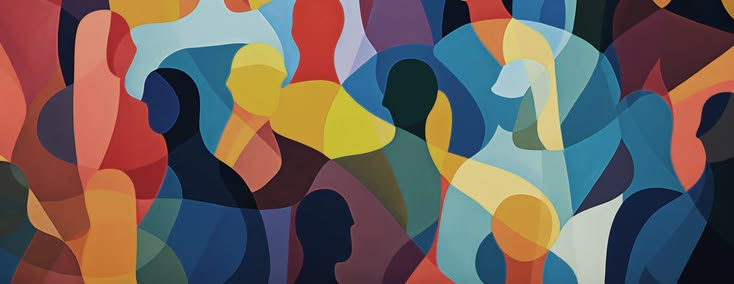

Além das Aparências
Antes de julgar uma cena, vale olhar de novo.
Antes de começar
Você verá algumas situações inspiradas no cotidiano. Escolha a alternativa que mais se aproxima do que você pensaria naquele momento.
1/8
Leia a cena
A cena aparecerá aqui.
olhando de novo
Reflexão
antes de sair
Que reflexão você leva daqui?
Ao longo das cenas, diferentes situações mostraram como nossas percepções influenciam a forma como enxergamos as pessoas.
0/420
Uma frase sincera já basta.
seu percurso
O que suas escolhas revelam
Ao longo das cenas, diferentes situações convidaram você a observar contextos, atitudes e percepções presentes no cotidiano.